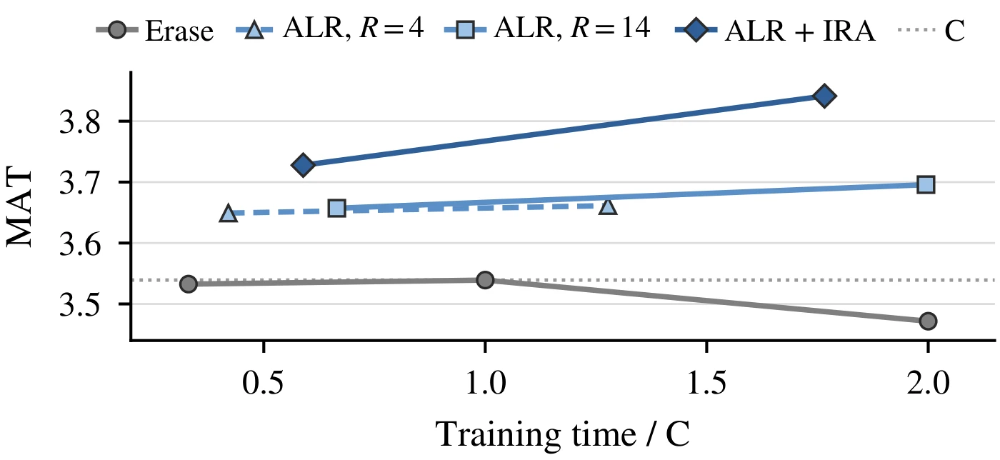

Recovering Off-Policy Supervision for Speculative Decoding
arXiv preprint
1Korea University 2Soongsil University 3Yonsei University Mirae Campus 4Sookmyung Women's University
†Corresponding authors
![Three rows that build the labels of a draft block from the same corpus prefix, x 1 to x a. (a) Erase: target features of the corpus prefix feed a draft block that holds the anchor x a and slots 1 to K. Each slot takes its label from the corpus token above it, and a gray wedge that thins toward the later slots stands for their shrinking weight. (b) ALR: the target continues the corpus prefix with a greedy rollout, y star 1 to y star K, and each rollout token labels the slot below it. (c) ALR + IRA: a primary block is labelled from the rollout as in ALR, and a secondary block outlined in blue is anchored on the rollout token y star j and reuses the rest of the rollout for its slots 1 to K minus j, followed by a gray tail.](assets/overview.webp)
Promptwhat year is shown in the photo?
-
ALR + IRA 4.3×over AR117 / 117 tokens0.66 s
-
DFlash (same data) 2.2×over AR57 / 117 tokens0.66 s
-
EAGLE-3 (HF adapter) 1.6×over AR45 / 117 tokens0.66 s
-
AR autoregressive 1×baseline27 / 117 tokens0.66 s
Qwen3-VL-8B on one H100
Abstract
Block drafters for speculative decoding are commonly trained on corpora written by external models, where a single off-policy token invalidates supervision for all subsequent slots in a block. Existing approaches discard these divergent slots, resulting in severe supervision loss. To resolve this problem while preserving the training corpus, we propose a rollout-based training framework that recovers full supervision through two complementary components. The first component, Anchor-Label Relabelling (ALR), replaces corpus labels with distributions from greedy target rollouts, restoring valid supervision across all predicted slots. The second component, In-Rollout Anchors (IRA), places draft blocks directly inside these rollouts to expose the drafter to target-generated context, reusing precomputed rollout features at no additional target cost. Across fixed vision-language and text corpora, our framework increases greedy accepted length by up to 36.5% over DFlash and consistently outperforms erasing baselines. Notably, a single epoch of our method surpasses the best erase schedules. After three epochs, it matches the acceptance length of training on target-regenerated responses. These results show that our framework provides an effective and compute-efficient approach for training speculative drafters on fixed corpora without modifying the original text. Code is available at https://
Method
Given an anchor token, a block drafter predicts all slots of a block in parallel, and each slot is trained on the corpus token at the same position. The label of a later slot therefore depends on the intermediate corpus tokens, which the drafter does not observe. If one of these tokens differs from the greedy choice of the target, every subsequent label in the block continues a prefix that the target would not generate at inference.
For a response sequence \(x\) from the training corpus and an index \(a\), an anchor block spans \(K + 1\) slots beginning at position \(a\). Slot 0 contains the anchor token \(x_a\), and the drafter predicts slots 1 through \(K\) in parallel conditioned on the target hidden representations up to position \(a\). Each objective gives slot \(k\) a label distribution \(\pi_{a,k}\) and a weight \(\omega_{a,k}\) that includes the decay envelope \(w_k = e^{-(k-1)/\gamma}\). With \(p_T\) the target next-token distribution, the erase baseline keeps the distillation label \(\pi_{a,k} = p_T(\cdot \mid x_{<a+k})\) and scales the slot weight by a survival gate, adapting the confidence-adaptive survival weighting of PARD-2 to distillation.
\[\begin{gathered} g_{a,k} = \prod_{1 \le j < k} p_T\bigl(x_{a+j} \mid x_{<a+j}\bigr) \\[0.45em] \omega_{a,k} = w_k\, g_{a,k} \end{gathered}\]
The gate equals 1 at slot 1, decreases monotonically along the block, and down-weights slots whose preceding corpus tokens have low probability under the target. Supervision remains conditioned on the corpus continuation, with only the loss weights changed.
-
Component 1
Anchor-Label Relabelling (ALR)
ALR retains the corpus context while substituting the corpus continuation with greedy rollouts generated by the target. Starting from each anchor, the target extends \(x_{\le a}\) greedily, providing slot \(k\) with the target distribution conditioned on the preceding \(k - 1\) rollout tokens.
\[\begin{gathered} y^*_i = \arg\max_v\, p_T\bigl(v \mid x_{\le a},\, y^*_{<i}\bigr) \\ \pi_{a,k} = p_T\bigl(\cdot \mid x_{\le a},\, y^*_{<k}\bigr) \end{gathered}\]
Slots after an early end of the sequence are masked, and the remaining slots retain \(\omega_{a,k} = w_k\), so none of them is erased. The rollout is computed within the training step by reusing the cached forward pass of the target, avoiding the need to generate or store full responses in advance.
-
Component 2
In-Rollout Anchors (IRA)
IRA keeps the total number of blocks fixed and relocates half of them into the rollouts of the other half. Each secondary block is positioned within a primary rollout at an offset \(j \sim \mathcal{U}\{2, \dots, K - 1\}\). Slot 0 is assigned the target-generated token \(y^*_j\), and slot \(k\) inherits the primary block label at position \(j + k\).
\[\begin{gathered} \pi^{(j)}_{a,k} = \pi_{a,j+k} = p_T\bigl(\cdot \mid x_{\le a},\, y^*_{<j+k}\bigr) \\ \omega^{(j)}_{a,k} = w_k\, \mathbf{1}[\, j + k \le K \,] \end{gathered}\]
Its conditioning context concatenates the target representations of the corpus prefix up to \(a\) with the intermediate representations stored for \(y^*_1, \dots, y^*_{j-1}\). The design incurs no additional forward passes over the target model, as these representations and the target distributions past index \(j\) are already computed during the primary rollout.
Thus, ALR corrects the labels, while IRA reduces the discrepancy between training and inference contexts. The rollout depth \(R\) counts the greedy tokens fed back to the target, and \(R = K - 1\) provides supervision across all \(K\) slots whenever the target does not terminate early. Following DFlash, the experiments set \(K = 15\) and sample 128 anchors per training sequence, and all drafters are initialized from the publicly released text-only DFlash head corresponding to the target base model without architectural changes.
Accepted Length and Speedup on a Fixed Corpus
The vision-language experiments pair the target Qwen3-VL-8B-Instruct with a DFlash block drafter initialized from the public text-only DFlash head. Drafters are trained on either the allava_laion split of ALLaVA or ShareGPT4V captions, with both corpora matched to an identical count of image-text pairs, and evaluated on COCO captioning, TextVQA, and DocVQA under greedy decoding (\(T = 0\)) and stochastic sampling (\(T = 1\)). The mean acceptance length \(\tau\) (MAT) counts accepted draft tokens plus one target token per verification step, and speedup is wall-clock speedup over autoregressive decoding (AR). The erase comparator uses the soft survival weight of PARD-2, and DFlash is trained on the same data.
| Target | Qwen3-VL-8B | Qwen3-VL-4B | ||||
|---|---|---|---|---|---|---|
| Train corpus | ALLaVA | ShareGPT4V | ALLaVA | |||
| Method | Speedup | \(\tau\) | Speedup | \(\tau\) | Speedup | \(\tau\) |
| T = 0 | ||||||
| DFlash | 2.09× | 2.88 | 2.01× | 2.80 | 2.19× | 2.92 |
| Erase | 2.62× | 3.54 | 2.62× | 3.57 | 2.62× | 3.56 |
| ALR | 2.68× | 3.70 | 2.80× | 3.67 | 2.65× | 3.63 |
| ALR + IRA | 2.82× | 3.84 | 2.77× | 3.83 | 2.77× | 3.81 |
| T = 1 | ||||||
| DFlash | 2.04× | 2.79 | 1.90× | 2.71 | 2.04× | 2.78 |
| Erase | 2.49× | 3.39 | 2.54× | 3.39 | 2.45× | 3.33 |
| ALR | 2.55× | 3.50 | 2.54× | 3.48 | 2.53× | 3.41 |
| ALR + IRA | 2.68× | 3.65 | 2.58× | 3.60 | 2.67× | 3.53 |
Scroll sideways to see every column.
Speedup over autoregressive decoding (AR) and mean acceptance length \(\tau\) after three epochs on each fixed training corpus. Vision values summarize COCO captioning, TextVQA and DocVQA. Aggregates are geometric means across benchmarks, averaged over available replicates. This table shows the Vision panel of the paper's table, and the Text panel appears in the next section.
Under greedy decoding, ALR + IRA attains the highest accepted length across all three vision-language configurations. On both 8B corpora, ALR consistently improves upon the soft survival-weighted erase baseline, with IRA providing an additional boost that reaches an 8.54% margin over erase on ALLaVA. Over DFlash trained on identical data, ALR + IRA improves accepted length by up to 36.5% at \(T = 0\) and 33.1% at \(T = 1\) across both 8B settings. Under stochastic sampling, the aggregate ranking is preserved even though the training labels derive from greedy target rollouts.
The gain repeats with a second target. With Qwen3-VL-4B-Instruct, ALR + IRA exceeds erase by 7.13% in accepted length at \(T = 0\). On DocVQA with this target, ALR in isolation falls below erase at both decoding temperatures, whereas ALR + IRA rises above it.
![Two rows of bar charts, the top row for T = 0 and the bottom row for T = 1. In each row, four panels plot the MAT gain over erase in percent for ALR and for ALR + IRA: ALLaVA with the 8B target, ShareGPT4V with the 8B target and ALLaVA with the 4B target, each on captioning, TextVQA and DocVQA, and the text target Qwen3-4B on seven benchmarks. The ALR + IRA bar is the taller of the two in every group except AIME24 at T = 1, where ALR is slightly higher, and it peaks at about 14% on TextVQA for ALLaVA with the 8B target at T = 0. The ALR bar is below zero only on DocVQA with the 4B target. A fifth panel plots the ALLaVA decoding speedup over AR for DFlash trained on the same data, erase, ALR and ALR + IRA on captioning, TextVQA, DocVQA and their geometric mean. ALR + IRA has the tallest bar in every group except DocVQA at T = 0.](assets/results.webp)
On ALLaVA, ALR + IRA decodes faster than erase at both temperatures: 2.82× versus 2.62× over AR at \(T = 0\), and 2.68× versus 2.49× at \(T = 1\). At \(T = 0\), captioning and TextVQA drive the speed gain while DocVQA is nearly tied despite higher accepted length. At \(T = 1\), ALR + IRA is faster than erase in all three domains, and the speed advantage also holds on ShareGPT4V under sampling. Autoregressive timing had a coefficient of variation of 3.4–5.6% across the three domains in a repeated-timing check, so close comparisons rest on accepted length rather than small speed differences.
The Gains Extend to a Text-Only Target
DFlash, erase, ALR and ALR + IRA are trained for three epochs on the same fixed UltraChat subset with Qwen3-4B as the target. Evaluation covers seven benchmarks spanning instruction following, mathematical reasoning, and code generation, and it measures decoding efficiency rather than answer accuracy or code pass rate.
| Benchmark | DFlash | Erase | ALR | ALR + IRA | ||||
|---|---|---|---|---|---|---|---|---|
| Speedup | \(\tau\) | Speedup | \(\tau\) | Speedup | \(\tau\) | Speedup | \(\tau\) | |
| T = 0 | ||||||||
| MT-Bench | 1.82× | 2.50 | 2.07× | 2.85 | 2.09× | 2.94 | 2.13× | 2.99 |
| Alpaca | 1.56× | 2.17 | 1.88× | 2.52 | 1.87× | 2.58 | 1.92× | 2.62 |
| GSM8K | 2.79× | 3.96 | 3.16× | 4.48 | 3.38× | 4.76 | 3.55× | 4.83 |
| AIME24 | 2.61× | 3.69 | 2.85× | 4.06 | 2.91× | 4.20 | 2.97× | 4.27 |
| AIME25 | 2.76× | 4.07 | 3.01× | 4.34 | 2.94× | 4.53 | 3.14× | 4.66 |
| HumanEval | 2.98× | 4.22 | 3.46× | 4.92 | 3.56× | 4.98 | 3.63× | 5.02 |
| LiveCodeBench | 2.33× | 3.25 | 2.64× | 3.72 | 2.62× | 3.81 | 2.73× | 3.84 |
| Avg. (7 tasks) | 2.35× | 3.32 | 2.67× | 3.75 | 2.70× | 3.87 | 2.80× | 3.93 |
| T = 1 | ||||||||
| MT-Bench | 1.79× | 2.42 | 1.97× | 2.72 | 2.06× | 2.79 | 2.15× | 2.83 |
| Alpaca | 1.52× | 2.16 | 1.72× | 2.47 | 1.78× | 2.54 | 1.80× | 2.57 |
| GSM8K | 2.71× | 3.78 | 3.01× | 4.26 | 3.19× | 4.50 | 3.29× | 4.55 |
| AIME24 | 2.41× | 3.35 | 2.49× | 3.54 | 2.58× | 3.66 | 2.59× | 3.65 |
| AIME25 | 2.40× | 3.49 | 2.62× | 3.77 | 2.46× | 3.85 | 2.66× | 3.96 |
| HumanEval | 2.89× | 3.97 | 3.22× | 4.57 | 3.19× | 4.63 | 3.20× | 4.66 |
| LiveCodeBench | 2.20× | 3.00 | 2.44× | 3.38 | 2.42× | 3.47 | 2.52× | 3.49 |
| Avg. (7 tasks) | 2.23× | 3.10 | 2.45× | 3.46 | 2.48× | 3.56 | 2.55× | 3.60 |
Scroll sideways to see every column.
Speedup over autoregressive decoding (AR) and mean acceptance length \(\tau\) after three epochs on each fixed training corpus. Text rows identify evaluation benchmarks. Aggregates are geometric means across benchmarks, averaged over available replicates. This table shows the Text panel of the paper's table, for the target Qwen3-4B.
ALR + IRA has the highest aggregate accepted length and decoding speedup across the seven text benchmarks at both temperatures. Its accepted-length gain over erase reaches 4.96% at \(T = 0\) and 4.10% at \(T = 1\). Under repeated A100 timing on a fixed text subset, the aggregate speed gains over erase are 4.62% at \(T = 0\) and 3.89% at \(T = 1\).
A control on the same corpus keeps the training recipe and corpus anchors fixed, separating label construction from the use of the gate. Rollout-conditioned labels improve aggregate accepted length under both choices of survival weighting, and survival weighting helps corpus-conditioned labels but adds little to rollout-conditioned labels at either decoding temperature. At \(T = 0\), the aggregate MAT is 3.586 for corpus labels without the gate and 3.758 for erase, against 3.886 for rollout labels with the gate and 3.884 for ALR, which omits it.
One Epoch Exceeds the Best Erase Schedules
The comparison below pairs training time with accepted length for one-epoch ALR and ALR + IRA and for C, the best erase schedule measured on each vision-language corpus, so it accounts for target-rollout compute alongside data exposure. A single epoch of ALR + IRA exceeds the best erase schedule on both corpora, while costing less than two epochs of erase. On ALLaVA, it achieves this higher accepted length in 41% less training time than the best erase schedule.
| Method | Epochs | Time/C | \(\tau\) |
|---|---|---|---|
| ALLaVA | |||
| Erase | 1 | 0.33 | 3.533 ±0.006 |
| ALR | 1 | 0.42 | 3.649 ±0.014 |
| ALR + IRA | 1 | 0.59 | 3.728 ±0.005 |
| Erase (C) | 3 | 1.00 | 3.539 ±0.010 |
| ShareGPT4V | |||
| Erase (C) | 1 | 1.00 | 3.640 ±0.002 |
| ALR | 1 | 1.28 | 3.695 ±0.011 |
| ALR + IRA | 1 | 1.77 | 3.778 ±0.003 |
Scroll sideways to see every column.
One-epoch training and the best erase schedules C at \(T = 0\). ALR uses \(R = 4\), and ALR + IRA uses \(R = 14\). Mean ± SD.


ALR + IRA improves from one to three epochs, while training erase for six epochs does not close the gap. At both recorded epoch counts, ALR + IRA achieves higher accepted length than full-depth ALR in less training time. Its secondary blocks reuse features and labels from the primary rollouts, which reduces rollout computation while providing target-generated context. The trajectories suggest that recovering supervision is more effective than additional passes over the fixed corpus.
Short rollouts suffice for ALR. \(R = 4\) is the shortest tested ALR depth that is non-inferior to \(R = 14\) after three epochs on ALLaVA, and it trains faster than \(R = 14\) on both corpora. IRA needs the full depth because it draws secondary anchors at offsets up to \(K - 1\) inside the rollout.
Matching Regeneration on a Fixed Corpus
Regenerating the corpus with the target avoids the loss of supervision. However, regeneration requires a separate generation stage before training and replaces the original responses, which may need to be kept, for example when only an audited or licensed release can be used for training. After three epochs on fixed ALLaVA, ALR + IRA comes within 0.4% of both target-regeneration references in aggregate accepted length. The two references use the same distillation loss and control supervised response length by truncation or a loss window.
| Method | (a) Overall | (b) COCO gain over ALR (%) | |||
|---|---|---|---|---|---|
| MAT ↑ | 0–15 | 16–63 | 64–127 | 128+ | |
| ALR | 3.696 | 0.00 | 0.00 | 0.00 | 0.00 |
| ALR + IRA | 3.841 | +1.32 | +5.60 | +5.15 | +3.57 |
| Target regeneration | |||||
| Truncated | 3.833 | +1.49 | +5.61 | +4.51 | +4.72 |
| Loss window | 3.856 | +3.60 | +7.21 | +5.12 | +5.65 |
Scroll sideways to see every column.
Length-matched target regeneration on the same ALLaVA prompts after three epochs at \(T = 0\). (a) Overall MAT with Qwen3-VL-8B. (b) MAT gains over ALR by round-start token offset on COCO captions.
This agreement suggests that rollout labels and in-rollout context can recover the accepted-length benefit of length-controlled regeneration without replacing the training corpus.
IRA's gain over ALR is larger at later positions in COCO captions. The truncated regeneration reference shows a related pattern: its advantage over ALR grows after the first 16 caption tokens and then levels off. Together, these patterns support exposing the drafter to the target-generated context that accumulates during decoding. The position profiles use one checkpoint of each method and group COCO verification rounds by their starting token offset.
IRA's Gain Concentrates Where Drafting Is Hard
IRA gains beyond changing slot weights. A slot-matched control matches IRA's block count, offsets and slot weights while keeping all blocks at corpus anchors, yet performs similarly to ALR. ALR + IRA achieves 4.10% higher accepted length than this control on ALLaVA after three epochs, which supports placing anchors inside target rollouts to train the drafter on both recent target-generated context and its continuation labels.
![Three panels. (a) Mean acceptance length with error bars for three drafters trained on ALLaVA: ALR at about 3.70, the slot-matched control at about 3.70 and ALR + IRA at about 3.85. (b) and (c) The acceptance gain of IRA over ALR in percent, plotted against the acceptance length of an outside drafter from 1 to 6 or more, for ALLaVA and for ShareGPT4V. On ALLaVA the gain falls from about 25% at length 1 to about 6% at length 2 and about 2% at 6 or more. On ShareGPT4V it falls from about 23% at length 1 to about 7% at length 2 and about 3% at 6 or more. The seed control stays near zero in both panels.](assets/controls.webp)
Panels (b) and (c) group drafting offsets in held-out captions, disjoint from the main evaluation, by the acceptance length of an independent drafter trained on the other corpus. On both corpora, IRA's gain is largest where that drafter misses the first token, whereas the seed control stays flat and the gain is smaller where it accepts five or more tokens. At first-token failures, IRA adds about 0.39 accepted tokens at each offset on both corpora, exceeding the gain from relabelling alone.
The implementation trains feature-conditioned block drafters and requires access to the target's hidden states and token distributions. Its rollouts are greedy, while the resulting drafter supports both greedy and sampled decoding.
BibTeX
@misc{lee2026offpolicy,
title = {Recovering Off-Policy Supervision for Speculative Decoding},
author = {Jungseob Lee and Chanjun Park and Sugyeong Eo and Hyeonseok Moon},
year = {2026},
journal = {arXiv preprint},
eprint = {2609.38795},
archivePrefix = {arXiv},
url = {https://arxiv.org/abs/2609.38795},
}